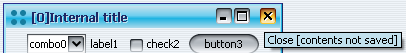
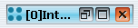

Yesterday i have stumbled upon this
entry from Apple developer zone. It shows how to indicate that a document window
(frame in Swing application) has changed contents. The indication is similar to that of
regular Mac application (dark dot in the close button). The way to accomplish this is to
put a windowModified client property with Boolean.TRUE value on either the
JRootPane or on the JInternalFrame.
This, of course, is Mac-specific, and does not have Swing support on other platforms.
That is, until now (kind of). The latest drop of Substance
version 2.1 provides just that - a pulsating close button of JFrame, JInternalFrame
and JDesktopIcon when the above property is set to Boolean.TRUE. You can
view it in action in this
movie (31-second, 526KB, originally WMV format, but should play as AVI too). In addition,
you can run the Web Start
demo to see it in action. Go to "Desktop" tab, click on "add" button and click on
"Mark changed" in the new internal frame. Here are few screenshots from the movie:
Pulsating loop on JInternalFrame - red theme:
Pulsating loop on JInternalFrame - yellow theme:
Pulsating loop on JInternalFrame - tooltip on close button in unsaved state:

Pulsating loop on JDesktopIcon:

Pulsating loop on JFrame:
Note that the close button is painted in red and pulsates every 5 seconds, changing its
theme from red to yellow and back to red in two seconds.